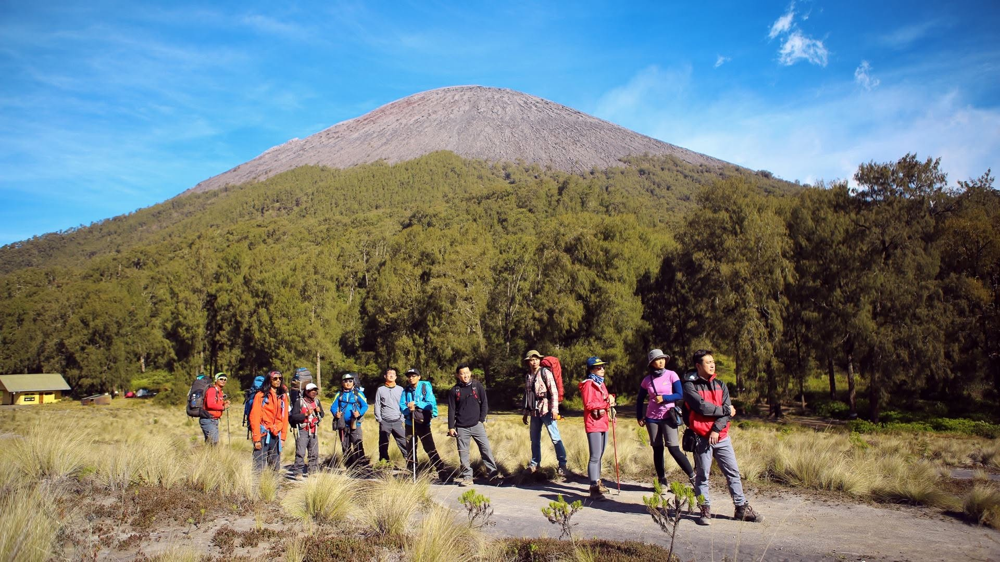

Pendakian Massal
dulu semeru, sekarang pumapala anggota baru
mencoba sumbing via dukuh seman jalur yg nyaman
Aktifitas
Stories, experiences & outdoor adventures.
Adventure Journal
Stories, experiences & outdoor adventures.
PREPARATIONPersiapan Pendakian Massal Gunung SumbingTahap awal persiapan pendakian bersama Pumapala anggota baru, mulai dari koordinasi peserta, kesiapan fisik, perlengkapan, hingga rencana teknis jalur Dukuh Seman.
FIELD NOTESMenjelajahi Jalur Dukuh SemanCatatan lapangan mengenai karakter jalur, kondisi perjalanan, dan hal-hal yang perlu diperhatikan sebelum pendakian.
ADVENTURE STORYDulu Semeru, Kini Cerita BerlanjutSebuah kilas balik perjalanan bersama di Semeru dan semangat yang dibawa menuju petualangan berikutnya.
TEPIDAUN ADVENTURE
Move. Explore. Experience.
Ruang untuk bergerak, menjelajah, berbagi pengalaman, dan membangun cerita melalui kegiatan di alam terbuka.